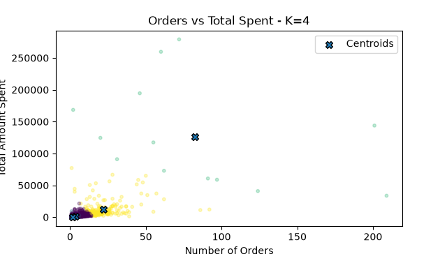

Machine Learning · Clustering
Customer Behavior Analysis & RFM Segmentation
An unsupervised learning project that transforms online retail transactions into customer-level RFM features.

Problem
Use purchase history to identify meaningful groups of customers with different engagement and value patterns.
Process
The workflow cleans transaction records, calculates Recency, Frequency, and Monetary features, scales those features, selects a cluster solution, and interprets the resulting customer groups.
Results and interpretation
The analysis produced four interpretable groups ranging from inactive customers to high-value loyal customers.
Limitations
K-Means assumes roughly spherical clusters and requires the number of clusters to be selected in advance. RFM also summarizes behavior without explaining why customers act differently.